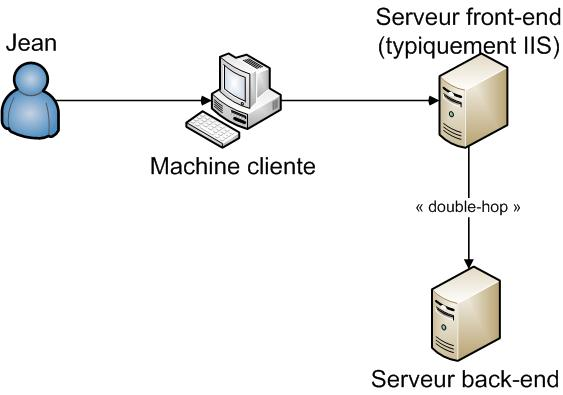
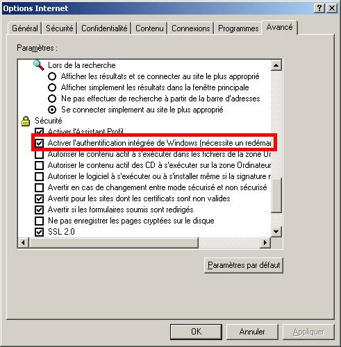

Problème du double-hop et solutions
Le problème
Un double saut (ou « double-hop ») survient lorsqu’une application serveur (typiquement une application Web ASP.NET) tente de s’authentifier avec les accréditations de l’utilisateur client sur un système « back-end » :

Le problème que l’on rencontre couramment est un souci d’authentification entre les deux serveurs. En effet, les accréditations de l’utilisateur ne peuvent pas être transmises entre le premier serveur et le second. Si le premier serveur tente de s’authentifier avec l’identité de l’utilisateur, le second serveur ne pourra pas reconnaître cette authentification, et il y aura une erreur d’authentification (erreur HTTP 401 par exemple).
Pour comprendre la cause de ce problème, rappelons rapidement quelques principes :
- Un processus possède une identité propre, qui peut-être un compte machine par défaut (comme Local System), un compte utilisateur local, ou un compte utilisateur de l’AD. Le code du processus est exécuté sous cette identité.
- Un thread possède par défaut la même identité que son processus parent. On peut cependant modifier cette identité dans un thread donné : on parle alors d’impersonation. Plusieurs threads dans un même processus peuvent donc tourner sous différentes identités. Il est également possible pour un thread impersonifié de revenir à l’identité par défaut du processus : c’est l’opération de revert-to-self.
- Dans une application ASP.NET, l’identité du processus est définie par l’identité du pool d’application. Les threads qui vont exécuter les requêtes clientes sont impersonifiés ou pas en fonction de l’attribut impersonate de la balise identity du web.config. L’identité emprunté par le thread peut prendre 2 valeurs :
- Si l’application Web est configurée en anonyme, c’est l’identité spécifiée dans IIS pour le compte anonyme qui sera utilisée par le thread.
- Si une authentification (Basique, Windows Intégrée, etc...) est configurée dans IIS, c’est l’identité de l’utilisateur qui sera utilisée par le thread.
Le problème de double-hop peut se poser dans ce dernier cas : lorsque l’application ASP.NET récupère l’identité de l’utilisateur, tout le code de l’application s’exécute sous cette identité. Une connexion à une base de données ou un service Web se fera donc (à défaut d’accréditations explicites) sous cette identité.
Le serveur back-end refusera alors la connexion puisqu’il est impossible au serveur frontal de prouver l’identité de l’utilisateur qu’il impersonifie (le système d’authentification NTLM ne permet qu’aux possesseurs du mot de passe de s’authentifier ; hors le serveur ASP.NET ne connaît pas ce mot de passe).
Il existe plusieurs options pour éviter ce comportement :
- Utilisation de l’authentification basique + SLL (pour éviter que le mot de passe ne transite en clair) : le serveur Web aura alors connaissance du mot de passe de l’utilisateur et pourra le réutiliser pour s‘authentifier sur le serveur back-end
- Utilisation de l’authentification Kerberos + délégation : un jeton d’authentification pourra alors passer entre les serveurs. C’est la méthode à préférer dans des environnements Intranet + AD.
- Faire un revert-to-self (par code) pour forcer le thread à utiliser l’identité du process : toutes les connexions au back-end se feront alors sous cette même identité.
- Utiliser une authentification FBA (Form Based Authentication) : on récupère les accréditations de l’utilisateur depuis uin formulaire, on vérifié son identité par code, et on réalise soi-même l’impersonation. Le serveur connaît alors les accréditations de l’utilisateur et peut les utiliser pour s’authentifier au près du back-end.
- Autres solutions : COM+, accréditations dans le web.config + encryption, etc
Passons en revue quelques-unes de ces solutions :
Authentification Kerberos avec délégation
Il s'agit d'une solution à mettre en place dans des environnement Intranet avec Active Directory. Tous les participants (les serveurs front- et back-end, ainsi que les postes clients) doivent pouvoir contacter le DC du domaine.
Il s'agit de réaliser les 4 étapes suivantes :
- Activation de l'authentification Kerberos au niveau de IIS et des systèmes back-end. Pour IIS, on utilisara la commande :
- Pour IIS 6 :
cscript adsutil.vbs set w3svc/0/ROOT/NTAuthenticationProviders "Negotiate,NTLM"
- Pour IIS 7 :
appcmd.exe set config "Web app Name" -section:system.webServer/security/authentication/windowsAuthentication /+"providers.[value='Negotiate']" /commit:apphost
-
Autorisation de l'authentification Kerberos au niveau des postes clients : dans Internet Explorer, l'option "Activer l'authentification intégrée de Windows" doit être activée, ce qui est normalement le cas par défaut.

- Enregistrement de SPN pour chacun des serveurs. Des SPN "par défaut" sont enregistrés pour la machine par SQL Server par exemple. Pour le service HTTP de IIS, et dans le cas où l'on utilise un compte du domaine pour l'identié de l'application pool, il faut enregistrer un nouveau SPN avec :
setspn -A HTTP/nom_de_la_machine domaine\utilisateur
- Autorisation de la délégation pour la machine front-end. Cela se réalise au niveau de la console des utilisateurs et des ordinateurs de l'AD
A noter que les étapes 1 à 3 ci-dessus correspondent à la mise en place de l'authentification Kerberos entre les différents acteurs du système. La délégation proprement dite n'intervient qu'à l'étape 4.
La fonction des SPN est d'identifier le mot de passe à utiliser pour crypter des jetons. Le mot de passe doit en effet être connu du compte exécutant le service (par exemple l'application pool) et du DC. Grâce au SPN le "serveur de jetons" (situé sur le DC) détermine quel compte va devoir décrypter le jeton. Pour une association {service + machine hôte} donnée, il cherche donc dans la base des SPN le compte correspondant. Pour les comptes machine, un SPN est automatiquement enregistré, ce qui dispense généralement de l'utilisation de setSPN pour des services s'exécutant sous un compte local. Si plusieurs SPN ont été positionnés pour un même couple {service + machine hôte}, l'authentification Kerberos ne pourra fonctionner puisque le "serveur de jetons" ne pourra déterminer le bon compte (et donc le bon mot de passe) à utiliser pour le cryptage du jeton.
Solution du revert-to-self
La méthode du revert-to-self est applicable dans une application ASP.NET en mode impersonate=true. Le principe est de repasser le contexte d'exécution du code sous l'identié du process. Il n'y a alors plus de problème d'authentification vers le système back-end puisque le processus est capable de répondre au challenge d'identification avec son propre mot de passe. Le scénario est alors le suivant :
- L'utilisateur se connecte à l'application Web. Il s'authentifie en Windows auprès de IIS qui passe le jeton à ASP.NET. ASP.NET lance exécute alors le thread pour le traitement de la requête sous l'identité de l'utilisateur. C'est là que le problème de double-hop peut survenir en cas de connexion à un système back-end : ASP.NET ne peut pas réutiliser l'identité de l'utilisateur initial.
- On fait donc un « revert-to-self » : le thread continue son excécution sous l'identité du process (ie de l'application pool)
- On exécute la requête vers le back-end
- On revient à l'identité initiale du thread (ie celle de l'utilisateur) pour la suite de l'exécution de la requête
Pour réaliser le revert-to-self, on utilise un appel à la méthode suivante :
using System.Security.Principal;
. . .
WindowsIdentity wi = null; // pour stocker l'identité afin d'y revenir plus tard
// Stocke l'identité courante et revient à l'identité du process
private void BackToProcessID()
{
wi = WindowsIdentity.GetCurrent();
WindowsIdentity.Impersonate(IntPtr.Zero);
}
Pour revenir à l'identité de l'utilisateur, on appelera cette méthode :
// Revient à l'identité stockée
private void BackToUserID()
{
if(wi != null)
wi.Impersonate();
}
Authentification par formulaire (+SSL) et impersonation
Cette méthode demande aux utilisateurs de s'authentifier par formulaire (cas d'Extranet donc plutôt). On mettra donc en place un cryptage SSL. Les informations fournies sont ensuite vérifiées contre l'AD (avec la fonction LogonUser) puis utilisées pour réaliser une impersonation. Le code continue alors à s'excécuter sous l'identité de l'utilisateur, et il sera possible de requêter des serveurs back-end puisque le jeton du processus peut répondre aux challenges. Voici le code qui réalise l'impersonation (et qui vérifie du même coup l'authenticité des informations saisies par l'utilisateur) :
protected void Button1_Click(object sender, EventArgs e)
{
try
{
// On récupère les infos de l'utilisateur : login, domaine et mot de passe
int slashPosition = TextBoxName.Text.IndexOf("\\");
string domain = TextBoxName.Text.Substring(0,slashPosition);
string user = TextBoxName.Text.Substring(slashPosition + 1);
string password = TextBoxPass.Text;
// On construit un WindowsIdentity pour cet utilisateur
WindowsIdentity wi = CreateIdentity(user, domain, password);
this.Page.Session["identity"] = wi; // on stocke l'identité pour utilisation ultérieure (d'autres requêtes)
FormsAuthentication.RedirectFromLoginPage(user, false); // fin du login
}
catch
{
Response.Redirect("logon.aspx", true); // erreur. Par exemple : LogonUser n'a pas pu logger l'utilisateur
}
}
protected WindowsIdentity CreateIdentity(string userName, string domain, string password)
{
IntPtr tokenHandle = new IntPtr(0);
tokenHandle = IntPtr.Zero;
const int LOGON32_PROVIDER_DEFAULT = 0;
const int LOGON32_LOGON_INTERACTIVE = 2;
//const int LOGON32_LOGON_NETWORK = 3;
// Logon the new user
bool returnValue = LogonUser(userName, domain, password, LOGON32_LOGON_INTERACTIVE, LOGON32_PROVIDER_DEFAULT, ref tokenHandle);
if (returnValue == false)
{
int returnError = Marshal.GetLastWin32Error();
throw new Exception("Log on failed: " + returnError);
}
// Return new identity
WindowsIdentity id = new WindowsIdentity(tokenHandle);
CloseHandle(tokenHandle);
return id;
}
[DllImport("advapi32.dll", SetLastError = true)]
private static extern bool LogonUser(String lpszUsername, String lpszDomain, String lpszPassword, int dwLogonType, int dwLogonProvider, ref IntPtr phToken);
[DllImport("kernel32.dll", CharSet = CharSet.Auto)]
private extern static bool CloseHandle(IntPtr handle);
Tableau récapitulatif
| | Principe | Contexte | Avantages | Inconvénients |
|---|
| Authentification basique + SSL | Le serveur connaît alors le mot de passe de l'utilisateur et peut ainsi accéder aux ressources distantes. | * Intranet et/ou Extranet * Cross-navigateurs | * Simple ! (mais acquisition d'un certificat SSL) | * Nécessite la mise en place d’un certificat SSL * L’utilisateur doit entrer ses accréditations |
|---|
| Délégation Kerberos | Mode d'authentification qui permet la délégation vers un serveur back-end | * Intranet * AD | * Pas de modification du code | * Nécessite des tâches d'administration sur le domaine * Complexe à maintenir |
|---|
| Retour au contexte de l'app pool | Une seule identité se connecte au back-end : celle de l’app pool | * Seule l'identité de l'app pool a accès à la ressource distante | * Relativement simple * S’adapte à tout type d’authentification | * Pas de granularité sur les ACL du back-end * Pas d’audit possible |
|---|
| Authentification par formulaire | On récupère le mot de passe de l’utilisateur pour réaliser l’impersonation depuis le code | * Extranet * Cross-navigateurs * Système tiers d’authentification des utilisateurs (peut être l’AD) | | |
|---|
| COM+ | Une seule identité se connecte au back-end : celle de l’application COM+ | * Seule l'identité de l'application COM+ a accès à la ressource distante | * Relativement simple * S’adapte à tout type d’authentification | * Pas de granularité sur les ACL du back-end * Pas d’audit possible |
|---|
| Transition de protocole | On impersonifie l’utilisateur sans son mot de passe | * AD Win2003 * Système tiers d’authentification des utilisateurs (peut être l’AD) | | * Complexe à mettre en place |
|---|
| Impersonation dans le web.config + cryptage | Une seule identité se connecte au back-end : celle définie dans le web.config | * Seule l'identité spécifiée a accès à la ressource distante | * Facile à maintenir | |
|---|